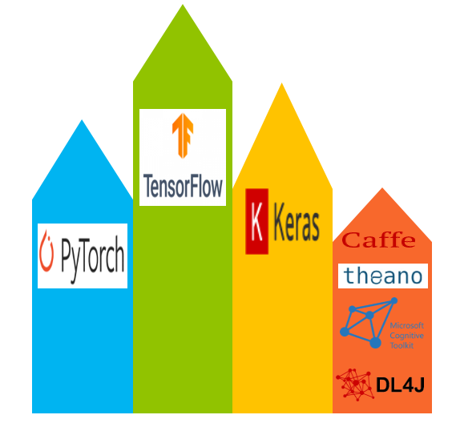

近年、深層学習は絶大な人気を博しており、様々な深層学習アーキテクチャがこの分野をより一層普及させています。これらのアーキテクチャをさまざまなユースケースに合わせて実装することをサポートするために、いくつかのフレームワークが用意されています。これらのフレームワークにはそれぞれ長所と短所がありますが、個々の作業量に応じて適切な深層学習フレームワークを選択することは、開発者、深層学習の実務者、データサイエンティストが最初に行うべき重要なステップです。

この記事では、最も人気のある深層学習フレームワークのうち、6つのフレームワークの概要を説明します。TensorFlow、Keras、PyTorch、Caffe、Theano、そしてDeeplearning4jです。ここ数年、これらの深層学習フレームワークのうち、Tensorflow、Keras、PyTorchの3つは、その使いやすさ、学術研究での広範な使用、商用コードと拡張性の高さから、勢いを増しています。この記事では、TensorFlowとPyTorchの比較対照も行います。
TensorFlow¶

機械学習の文脈では、_tensor_は、ニューラルネットワークを記述する数学的モデルで使用される多次元配列を指す。言い換えれば、テンソルは通常、行列やベクトルの高次元の一般化である。
次元の数を示すランクを使った簡単な記法により、テンソルは複雑なn_次元`のベクトルやハイパーシェイプをn_次元`の配列として表現することができます。テンソルには，データ型と形状という2つの性質があります．
TensorFlowは、2015年末にApache 2.0ライセンスで公開されたオープンソースの深層学習フレームワークです。それ以来、世界で最も広く採用されている深層学習フレームワークの一つとなっています（このフレームワークをベースにしたGitHubプロジェクトの数から見て）。
TensorFlowは、Google Brainプロジェクトで開発された独自のプロダクションディープラーニングシステムであるGoogle DistBeliefを起源としている。GoogleはTensorFlowを分散処理のために一から設計し、本番データセンターのTensor Processing Unit（TPU）と呼ばれるGoogleのカスタムASIC（特定用途向け集積回路）上で最適に動作するようにした。この設計により、TensorFlowは深層学習アプリケーションにとって効率的なものとなっている。
このフレームワークは、サーバー、デスクトップ、モバイルデバイスのCPU、GPU、TPU上で動作させることができる。開発者は、ローカルまたはクラウドのいずれかで、複数のオペレーティングシステムとプラットフォーム上でTensorFlowを展開できます。多くの開発者は、TensorFlowが、同じくハードウェアアクセラレーションが可能で、アカデミアで広く使用されているTorchやTheanoなどの類似の深層学習フレームワークよりも、分散処理のサポートが優れており、商用アプリケーション向けの柔軟性と性能が高いと考えている。
深層学習ニューラルネットワークは、通常、多くの層で構成されています。多次元配列を用いて層間でデータの転送や演算を行います。ニューラルネットワークの層間をテンソルが流れることから、TensorFlowと呼ばれるようになった。
TensorFlowの主なプログラミング言語はPythonです。C++、Java®言語、Goアプリケーション・プログラミング・インターフェース（API）も安定性を約束することなく利用可能であり、C#、Haskell、Julia、Rust、Ruby、Scala、R、さらにはPHP向けの多くのサードパーティ製バインディングもある。Googleは、Android上でTensorFlowアプリケーションを実行するために、モバイルに最適化されたTensorFlow-Liteライブラリを用意している。
このセクションでは、フレームワークの利点やアプリケーションなど、TensorFlowシステムの概要を説明します。
TensorFlowのメリット¶
TensorFlowは開発者に
-
Eager execution. TensorFlow 2では、グラフを作成せずに演算を即座に評価して具体的な値を返すEager executionをサポートしています。これは、モデル構築のキックスタートやモデルのデバッグに役立ちます。
-
計算グラフモデル. TensorFlowは、有向グラフと呼ばれるデータフローグラフを用いて計算モデルを表現します。これにより、開発者は内蔵ツールを使ってニューラルネットワーク層内で何が起こっているかを簡単に視覚化したり、パラメータや設定をインタラクティブに調整してニューラルネットワークモデルを完成させたりすることが直感的にできる。
-
Simple-to-use API. Python開発者は、独自のモデルを開発するためにTensorFlow raw、低レベルAPI、またはコアAPIのいずれかを使用するか、または組み込みモデルのための高レベルAPIライブラリを使用することができます。TensorFlowには多くのビルトインおよびコントリビュートされたライブラリがあり、Kerasのような高レベルの深層学習フレームワークをオーバーレイして高レベルAPIとして機能させることも可能だ。以前のAPIの多くは削除されているか、TensorFlow 2.0に更新されている。
-
柔軟なアーキテクチャ. TensorFlowを使用する大きな利点は、モジュール化された、拡張可能で柔軟な設計を持っていることです。開発者は、コードをほとんど変更することなく、CPU、GPU、TPUの各プロセッサ間でモデルを簡単に移動させることができる。本来は大規模な分散型トレーニングと推論のために設計されているが、開発者はTensorFlowを使って、他の機械学習モデルの実験や、既存モデルのシステム最適化を行うこともできる。
-
分散処理. Google Brainは、カスタムASIC TPU上での分散処理のためにTensorFlowをゼロから設計しました。さらに、TensorFlowは複数のNVIDIA GPUコア上で実行することができる。開発者は、Intel Xeon および Xeon Phi ベースの x64 CPU アーキテクチャまたは ARM64 CPU アーキテクチャを利用することができます。TensorFlowは、マルチアーキテクチャーやマルチコアのシステムだけでなく、計算負荷の高い処理をワーカータスクとしてファームアウトする分散プロセスでも実行できる。開発者は、TensorFlow サーバーのクラスターを作成し、計算グラフをこれらのクラスターに分散させてトレーニングを行うことができます。TensorFlowは、グラフ内とグラフ間の両方で、同期または非同期に分散学習を行うことができ、メモリ上またはネットワーク化された計算ノード間で共通データを共有することができる。
-
性能. 性能はしばしば論争の的になるトピックですが、ほとんどの開発者は、どんな深層学習フレームワークでも、低エネルギーコストで高い性能を実現するために、基礎となるハードウェアが最適に動作するかどうかに依存することを理解しています。一般的には、どのフレームワークでもネイティブの開発プラットフォームが最良の最適化を実現します。TensorFlowはGoogle TPUで最も優れた性能を発揮しますが、サーバーやデスクトップだけでなく、組み込みシステムやモバイルデバイスなど、さまざまなプラットフォームで高い性能を発揮します。また、このフレームワークは、驚くほど多くのプログラミング言語に対応しています。IBMプラットフォーム上のIBM Watsonのように、ネイティブに動作する別のフレームワークがTensorFlowを上回ることもあるが、人工知能（AI）プロジェクトは、複数のエンドアプリケーションを対象としたプラットフォームやプログラミング言語にまたがることがあり、そのすべてが一貫した結果を出す必要があるため、開発者には人気がある。
TensorFlowアプリケーション¶
このセクションでは、TensorFlowが得意とするアプリケーションを見ていきます。当然のことながら、Googleはテキスト検索や音声検索、言語翻訳、画像検索のアプリケーションにTensorFlowの独自版を使用していたため、TensorFlowの主な強みは分類と推論にある。例えば、Googleの検索結果をランク付けするエンジン「RankBrain」をGoogleはTensorFlowに実装した。
TensorFlowは、複数の音声を区別したり、環境ノイズの多い環境で音声をフィルタリングしたり、音声パターンを模倣してより自然な響きのテキスト・トゥ・スピーチを実現したりすることで、音声認識や音声合成を向上させるのに利用できる。さらに、異なる言語の文構造を処理して、より良い翻訳を行うことができます。また、画像やビデオの認識や、物体、ランドマーク、人物、感情、活動などの分類にも利用できます。これにより、画像やビデオの検索が大幅に改善されました。
TensorFlowは、柔軟性、拡張性、モジュール化された設計であるため、開発者が特定のモデルやアプリケーションに限定されることはない。開発者はTensorFlowを使って、機械学習や深層学習のアルゴリズムだけでなく、統計モデルや一般的な計算モデルも実装している。応用例や貢献したモデルについては、TensorFlowの事例を参照のこと。
Keras¶

Kerasは、他の深層学習フレームワークとは異なる、Pythonベースの深層学習ライブラリです。Kerasは、ニューラルネットワークの高レベルAPI仕様として機能します。Kerasは、ユーザーインターフェースとしても、その上で動作する他の深層学習フレームワークのバックエンドの機能を拡張するためにも使用することができます。
Kerasは、学術的に人気の高いTheanoフレームワークの簡易フロントエンドとしてスタートしました。それ以来、Keras APIはGoogle TensorFlowの一部となっている。Kerasは、Microsoft Cognitive Toolkit（CNTK）、Deeplearning4J、およびApache MXNetを公式にサポートしている。このように広くサポートされているため、Kerasはフレームワーク間の移行のためのデファクトツールとしての地位を獲得している。開発者は、深層学習ニューラルネットワークのアルゴリズムやモデルだけでなく、事前に学習させたネットワークやウェイトも移植することができます。
Kerasは、マサチューセッツ工科大学（MIT）ライセンスで公開されているオープンソースのPythonパッケージで、François Chollet、Google、Microsoftなどがソフトウェアの著作権の一部を保有しています。
Kerasフロントエンドは、研究におけるニューラルネットワークモデルの迅速なプロトタイピングを可能にします。このAPIは習得と使用が容易で、フレームワーク間でモデルを簡単に移植できるという利点もあります。
Kerasは自己完結型なので、Kerasが動作しているバックエンドフレームワークと対話することなく使用することができます。Kerasは、計算グラフを定義するための独自のグラフデータ構造を持っています。Kerasは、計算グラフを定義するための独自のグラフデータ構造を持っており、基盤となるバックエンドフレームワークのグラフデータ構造に依存しません。このアプローチにより、バックエンドフレームワークのプログラミングを学ぶ必要がなくなります。これが、GoogleがTensorFlowコアにKeras APIを追加することにした理由です。
しかし、Keras 2.4.0では、マルチバックエンドのKerasを廃止し、TensorFlowのみに焦点を当てている。
Kerasのメリット¶
では、なぜKerasを使うのでしょうか？以下のようないくつかのメリットがあります。
-
深層学習アプリケーションのユーザーエクスペリエンス(UX)の向上 KerasのAPIはユーザーフレンドリーです。APIはよく設計されており、オブジェクト指向で柔軟性があるため、ユーザーエクスペリエンスが向上します。研究者は、潜在的に複雑なバックエンドを扱うことなく、新しい深層学習モデルを定義することができ、その結果、よりシンプルで無駄のないコードを得ることができます。
-
Seamless Python integration. KerasはPythonのネイティブパッケージであり、Pythonのデータサイエンスエコシステム全体に容易にアクセスすることができます。例えば、Pythonのscikit-learn APIは、Kerasのモデルを使用することができます。TensorFlowなどのバックエンドに精通した開発者は、Pythonを使ってKerasを拡張することもできます。
-
大規模でポータブルな作品群と強力な知識ベース 研究者たちはこれまで、KerasをTheanoバックエンドとともに使用してきました。その結果、大規模な研究成果と強力なコミュニティの知識ベースが得られ、深層学習の開発者はTheanoバックエンドからTensorFlowバックエンドに簡単に移植することができます。ウェイトもバックエンド間でポータブルなので、事前にトレーニングされたモデルは、わずかな調整で簡単にバックエンドを交換することができます。KerasとTheanoの研究は、TensorFlowや他のバックエンドにも関連しています。さらに、Kerasは多くの学習リソース、ドキュメント、コードサンプルを自由に利用できるようにしている。
Kerasアプリケーション¶
フィットジェネレータ、データの前処理、リアルタイムのデータ拡張などのKerasの機能により、開発者はより少ない学習データセットで強力な画像分類器を学習することができます。Kerasには、以下のような事前学習された画像分類器モデルが組み込まれています。Inception-ResNet-v2、Inception-v3、MobileNet、ResNet-50、VGG16、VGG19、Xceptionなどがあります。
**注：＊＊＊これらのモデルは様々なソースから提供されているため、これらのモデルの重みの使用にはいくつかの異なるライセンスが適用されます。
Kerasを使えば、数行のコードで高度なモデルを定義することができます。Kerasは、少ない学習データセットを使って畳み込みニューラルネットワークを学習するのに特に有効です。Kerasは、画像分類アプリケーションでの利用が多いですが、テキストと音声の両方を対象とした自然言語処理（NLP）アプリケーションにも有用です。
TensorFlow 2とKerasの関係を解明する¶
KerasとTensorFlowは、しばしば競合するフレームワークとして誤って想定されている。Kerasはニューラルネットワークモデルを開発するための高レベルのAPIであり、低レベルの計算は扱わない。こうした低レベルの計算については、KerasはTheano、Tensorflow、CNTKといった他のバックエンドエンジンに依存していた。しかし、Kerasの最新リリースによると、KerasはTensorFlowコアAPIとの統合に主眼を置く一方で、Theano/CNTKの修正サポートを継続するという。

Kerasは基本的にTensorFlowの一部である。tf.keras サブモジュール/パッケージは、TensorFlow に対する Keras API の実装です。今後、すべての深層学習の実践者は、コードをTensorFlow 2.0とtf.kerasパッケージに切り替えることが推奨されている。
PyTorch¶

PyTorchは、修正されたBerkeley Software Distributionライセンスの下でリリースされた、オープンソースのPythonパッケージです。PyTorchの著作権は、Facebook、Idiap Research Institute、New York University (NYU)、およびNEC Labs Americaにあります。データサイエンスの分野ではPythonが主流ですが、PyTorchは深層学習の分野では比較的新しい言語です。
このセクションでは、PyTorchシステムの概要を説明し、以下のトピックについて詳細に説明します。
- PyTorchの背景
- PyTorchを使うメリット
- 典型的なPyTorchアプリケーション
ニューラルネットワークのアルゴリズムでは、一般的に損失関数の山や谷を計算しますが、多くはそのために勾配降下関数を使用します。Torchでは、PyTorchの前身であるTwitter社が提供しているTorch Autogradパッケージが勾配関数を計算します。Torch Autograd は、Python Autograd をベースにしています。
PyTorchの主な使用例は研究です。Facebookは革新的な研究にPyTorchを使い、本番ではCaffe2に切り替えています。Open Neural Network Exchange](https://onnx.ai/)というフォーマットにより、PyTorchとCaffe2の間でモデルを変換することができ、研究と生産の間のタイムラグを減らすことができます。
AutogradやChainerなどのPythonパッケージは、どちらも_tape-based auto-differentiation_と呼ばれる技術を使ってグラデーションを計算します。そのため、これらのパッケージはPyTorchのデザインに大きな影響を与えました。
テープベースの自動微分法は、テープレコーダーのように、実行された操作を記録し、それを再生して勾配を計算するというもので、Reverse-mode auto-differentiationとしても知られています。 PyTorch Autogradは、この関数の最も速い実装の1つです。
この機能を使うことで、PyTorchユーザはオーバーヘッドや遅延のペナルティなしに、ニューラルネットワークを任意の方法で調整することができます。その結果、多くの有名なフレームワークとは異なり、PyTorchユーザーは動的にグラフを構築することができ、フレームワークの速度と柔軟性は、新しい深層学習アルゴリズムの研究開発を促進します。
この性能の一部は、PyTorchのコアに採用されているモジュラーデザインに由来しています。PyTorchは、CPUやGPU用のテンソルやニューラルネットワークのバックエンドのほとんどを、独立した無駄のないCベースのモジュールとして実装しており、統合された数学アクセラレーションライブラリによって高速化されています。
PyTorchはPythonとシームレスに統合されており、設計上はImperativeコーディングスタイルを採用しています。さらに、Luaベースの前身であるPyTorchが人気を博した拡張性も維持されています。ユーザーは、Python用のC Foreign Function Interface (cFFI)をベースにした拡張APIにより、C/C++を使ってプログラミングすることができます。
Torchとは¶
Torchは、機械学習や科学技術計算のためのモジュール式のオープンソースライブラリです。ニューヨーク大学の研究者が学術研究のために最初に開発しました。LuaJITコンパイラーを使用することでパフォーマンスが向上し、CベースのNVIDIA CUDA拡張によりGPUアクセラレーションを利用することができます。
多くの開発者は、GPU対応のNumPyの代替品としてTorchを使用しており、他の開発者は深層学習アルゴリズムの開発にTorchを使用しています。Torchは、FacebookやTwitterで使用されていることで注目を集めている。Google DeepMindのAIプロジェクトでは、最初はTorchを使っていたが、その後TensorFlowに切り替えた。
LuaとLuaJITとは¶
Luaは、複数のプログラミングモデルをサポートする軽量なスクリプト言語で、アプリケーションの拡張性にその起源があります。LuaはコンパクトでC言語で書かれているため、制約の多い組み込みプラットフォームでも動作します。1993年にブラジルのリオデジャネイロ・カトリック大学で初めて導入された。
LuaJITは、Luaのパフォーマンスを向上させるためのプラットフォーム固有の最適化機能を備えたJIT（Just-in-time）コンパイラです。LuaJITは、Luaのパフォーマンスを向上させるためのプラットフォーム固有の最適化機能を備えたJIT（Just-in-time）コンパイラであり、標準LuaのC APIを拡張・強化している。
PyTorchとは¶
PyTorch には 2 つのバリエーションが存在します。元々は Hugh Perkins 氏が LuaJIT ベースの Torch フレームワークの Python ラッパーとして "pytorch" を開発しました。しかし、ここで取り上げているPyTorchの亜種は、全く新しい開発です。古いバージョンとは異なり、PyTorchはもはやLua言語とLuaJITを使用しません。その代わりに、Pythonのネイティブパッケージとなっています。
PyTorchはTorchをPythonで再設計して実装していますが、バックエンドコードには同じコアCライブラリを共有しています。PyTorchの開発者は、Pythonを効率的に実行するために、このバックエンドコードをチューニングしました。また、GPUベースのハードウェアアクセラレーションや、LuaベースのTorchを研究者に人気のあるものにした拡張性の機能も維持しています。
PyTorchの利点¶
PyTorchには多くのメリットがあります。主な項目を見ていきましょう。
-
動的な計算グラフ. 計算グラフを用いる深層学習フレームワークの多くは、実行前にグラフを生成・解析します。これに対し、PyTorchは逆モードの自動微分法を用いて実行時にグラフを構築します。そのため、モデルに任意の変更を加えても、ランタイムラグやモデルを再構築するためのオーバーヘッドが発生しません。PyTorchは、逆モード自動微分法を最も高速に実装しています。デバッグが容易なだけでなく、ダイナミックグラフによってPyTorchは可変長の入出力を扱うことができ、テキストや音声の自然言語処理に特に役立ちます。
-
Lean back end. PyTorchは単一のバックエンドを使うのではなく、CPUとGPU、それぞれの機能ごとにバックエンドを使い分けています。例えば、CPU用のテンソルバックエンドはTH、GPU用のテンソルバックエンドはTHCとなります。同様に、ニューラルネットワークのバックエンドは、CPU用がTHNN、GPU用がTHCUNNとなっています。個々のバックエンドを使用することで，特定のタスクに特化した無駄のないコードを，特定のクラスのプロセッサ上で高いメモリ効率で実行することができます．独立したバックエンドを使用することで、組み込みアプリケーションなどの制約のあるシステムにPyTorchを導入しやすくなります。
-
Python-first approach. Torchの派生製品ではありますが、PyTorchはデザイン的にPythonのネイティブパッケージです。Python言語のバインディングとしてではなく、Pythonの不可欠な一部として機能します。PyTorchは全ての機能をPythonクラスとして構築します。そのため、PyTorchのコードはPythonの関数や他のPythonパッケージとシームレスに統合することができます。
-
Imperative programming style. プログラムの状態を直接変更することで計算を開始するため、コードの実行は遅延せず、シンプルなコードを生成し、コードの実行方法に影響を与える多くの非同期実行を避けます。また、データ構造を操作する際にも、直感的でデバッグしやすいスタイルです。
-
高い拡張性 PythonのcFFIをベースに、CPU用にコンパイルされた拡張APIや、GPU用にCUDAでコンパイルされた拡張APIを利用することで、C/C++を使ったプログラミングが可能です。この特徴により、PyTorchを新しい実験的な用途に拡張することができ、研究用としても魅力的です。例えば、PyTorchのオーディオ拡張機能は、オーディオファイルの読み込みを可能にします。
典型的なPyTorchのアプリケーション¶
TorchとPyTorchはバックエンドのコードを共有しているため、LuaベースのTorchとPyTorchが文献上で混同されていることがよくあります。そのため、時系列で見ないと両者を区別するのは難しい。例えば、Google DeepMindのAIプロジェクトでは、TensorFlowに切り替える前にTorchを使っていました。この切り替えはPyTorchの登場前に行われたため、PyTorchアプリケーションの例とは考えられない。TwitterはTorchのコントリビューターであり、現在はTensorFlowとPyTorchを使ってタイムライン上のランキングアルゴリズムを微調整している。
TorchもPyTorchも、Facebookではテキストや音声のNLPの研究に多用されている。Facebookは多くのオープンソースPyTorchプロジェクトを公開しており、その中には以下に関するものも含まれています。
- チャットボット
- 機械翻訳
- テキスト検索
- 音声合成
- 画像やビデオの分類
PyTorch Torchvisionパッケージでは、AlexNet、VGG、ResNetなどの人気のある画像分類モデルのモデルアーキテクチャや事前学習済みモデルにアクセスできます。
また、PyTorchは柔軟性、拡張性、モジュラーデザインを採用しているため、特定のモデルやアプリケーションに制限されることはありません。NumPyの代わりにPyTorchを使うことも、機械学習や深層学習のアルゴリズムを実装することもできます。アプリケーションや貢献されたモデルの詳細については、https://github.com/pytorch/examplesのPyTorch examplesページをご覧ください。
TensorFlowとPyTorchの比較¶
このセクションでは、現在最も人気のある深層学習フレームワークの2つを比較します。TensorFlowとPyTorchです。
-
Eas of use. TensorFlowは、その包括的で使いにくいAPIのためにしばしば批判されていたが、Kerasがコアプロジェクトに組み込まれたTensorFlow 2.0で状況は大きく変わった。Kerasが組み込まれてからは、複数の冗長性や不整合性が取り除かれ、フレームワークは安定したクリーンな作業環境を提供している。PyTorchは比較的低レベルの環境を提供しており、カスタマイズされたレイヤーを書く自由度が高く、Pythonのパワーをフルに活用することができます。全体的に、PyTorchフレームワークはPython言語とより緊密に統合されており、ほとんどの場合、よりネイティブに感じられる。TensorFlowで書いていると、モデルがレンガの壁の向こうにあって、通信するための小さな穴がいくつも開いているように感じることがありますが、それはまさにKerasの統合が解決してくれます。
-
静的な計算グラフ vs 動的な計算グラフ. TensorFlowは静的なグラフの概念で動作します。つまり、ユーザーはまずモデルの計算グラフを定義してから、機械学習モデルを実行する必要がある。PyTorchは、動的な計算グラフを使用することで優位性を発揮します。つまり、Tensorflowでは、外部エンティティとのすべてのコミュニケーションは、テンソルである
tf.Sessionオブジェクトとtf.Placeholderを介して行われる。PyTorchでは、すべてがよりダイナミックで、特別なセッションインターフェイスやプレースホルダーを使わずに、ノードを定義、変更、実行することができます。 -
デバッグとイントロスペクション. PyTorchの計算グラフは実行時に定義され、好きなPythonのデバッグ方法を使うことができ、Python開発者のデバッグ体験をよりシンプルにします。残念ながら、これはTensorflowではそうではない。開発者は、実行時にTensorFlow式を評価するのに役立つ
tfdbg(TensorFlow debugger) に精通していなければならない。 -
データの可視化. TensorBoard は機械学習モデルを可視化するためのツールです。また、エラーを素早く発見するのにも役立ちます。このツールは、異なるトレーニングの実行をデバッグしたり比較したりするのに役立ちます。一方、PyTorchでは
visdomというツールを使用していますが、すべての機能を備えているわけではなく、もう少し不完全です。TensorBoardをPyTorchと一緒に使うことができる統合機能がありますが、ネイティブにはサポートされていません。 -
データ並列処理. PyTorchとTensorFlowを差別化する最大の特徴の一つである、宣言的なデータ並列処理です。どんなモジュールでも
torch.nn.DataParallelを使ってラップすれば、バッチ次元で並列化されます。こうすることで、少ない労力で複数のGPUを使うことができます。それに比べてTensorFlowでは、特定のデバイスで実行されるように微調整することができます。とはいえ、Tensorflowでデータ並列を定義するのはより難しく、手動で、多くの労力を必要とする。 -
Deployment. TensorFlowでは、モデルをシームレスにデプロイし、また異なるバージョンを管理するためのTensorFlow-Serveがあります。 しかし、PyTorchになると、2020年6月にリリースされたPyTorch-Serveという新しく導入されたパッケージがありますが、まだ成熟していません。TensorFlow Lite（オリジナルのTensorFlowモデルを軽量化したもの）をモバイルやIoTデバイスに導入することができます。TensorFlowモデルは、TensorFlow.jsを使ってブラウザ上で実行することもできます。PyTorchでは、モバイル対応はPyTorch Mobileのみとなっています。
-
コミュニティサポート. コミュニティサポートの面では、どちらのフレームワークも多数のアクティブユーザーと開発者による大規模なサポートがあります。しかし、プロダクション側から見ると、TensorFlowのコミュニティの方がはるかに大きく、活発です。研究業界に目を向けると、PyTorchが最も適しています。コース、学習リソース、チュートリアルに関しては、PyTorchが比較的新しいフレームワークであるため、Tensorflowの方が内容が充実していますが、現在は深層学習業界で大きな盛り上がりを見せています。
Caffe¶

もう1つの人気のある深層学習フレームワークはCaffeです。Caffeは元々、博士論文の一部として開発されましたが、現在はBerkeley Software Distributionライセンスの下でリリースされています。Caffeは、CNNやLSTMなどの幅広い深層学習アーキテクチャをサポートしていますが、RBMやDBMはサポートしていません（ただし、Caffe2ではサポートされる予定です）。
Caffeは、画像分類やその他のビジョンアプリケーションに使用されており、NVIDIA CUDA Deep Neural NetworkライブラリによるGPUベースのアクセラレーションをサポートしています。Caffeは、深層学習アルゴリズムをシステムのクラスター上で並列化するためのOpen Multi-Processing（OpenMP）をサポートしています。CaffeとCaffe2は、パフォーマンスのためにC++で書かれており、深層学習のトレーニングと実行のためにPythonとMATLABのインターフェースを提供します。
# Theano¶

Theanoは低レベルのPythonライブラリで、数式の定義、最適化、評価に関連する深層学習タスクを対象に使用されます。非常に優れた演算性能を持つ一方で、インターフェースやエラーメッセージに関する不満も多い。そのため、Theanoは主にKeras、Lasagne、Blocksといった、高速なプロトタイピングを目的としたハイレベルフレームワークのラッパーと組み合わせて使用されている。
ディープラーニング4j¶

Deeplearning4j は人気のある深層学習フレームワークで、Java 技術に重点を置いていますが、Scala、Python、Clojure などの他の言語用のアプリケーション プログラミング インターフェースも含まれています。このフレームワークはApacheライセンスで公開されており、RBM、DBN、CNN、RNNをサポートしています。また、Deeplearning4jには、ビッグデータ処理フレームワークであるApache HadoopやSparkと連携する分散並列版もあります。
Deeplearning4jは、金融分野の不正検知、レコメンダーシステム、画像認識、サイバーセキュリティ（ネットワーク侵入検知）など、さまざまな問題に応用されています。このフレームワークは、GPU最適化のためのCUDAと統合されており、OpenMPやHadoopとの分散も可能です。
結論¶
この記事では、最も人気のある6つのフレームワークの概要を説明しました。TensorFlow、Keras、PyTorch、Caffe、Theano、Deeplearning4jの6つのフレームワークの概要を紹介しました。TensorFlowとKerasの関係についても触れ、TensorFlowとPytorchの比較検討も行いました。